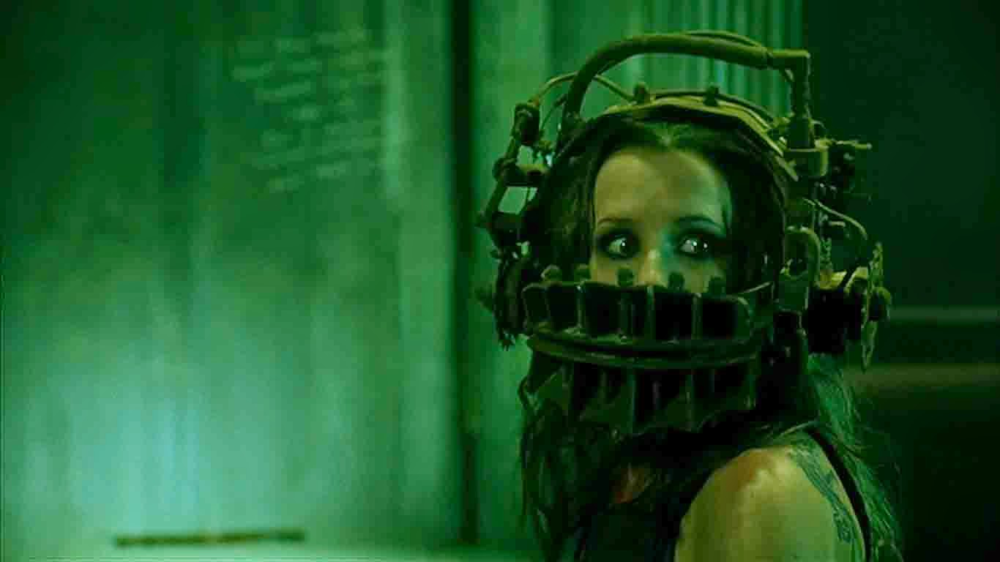
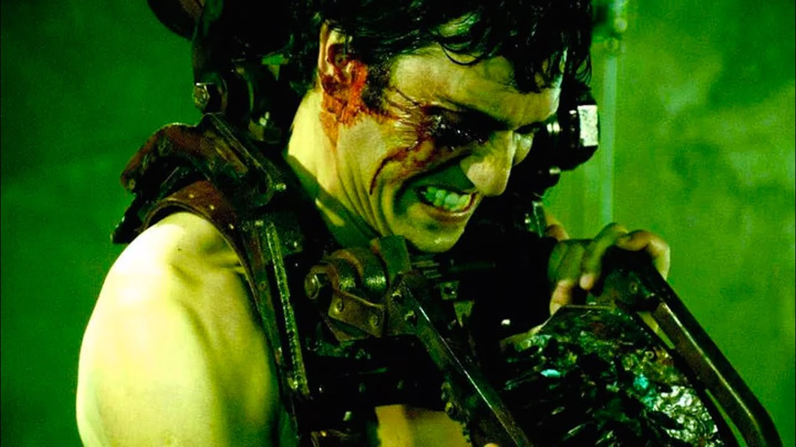
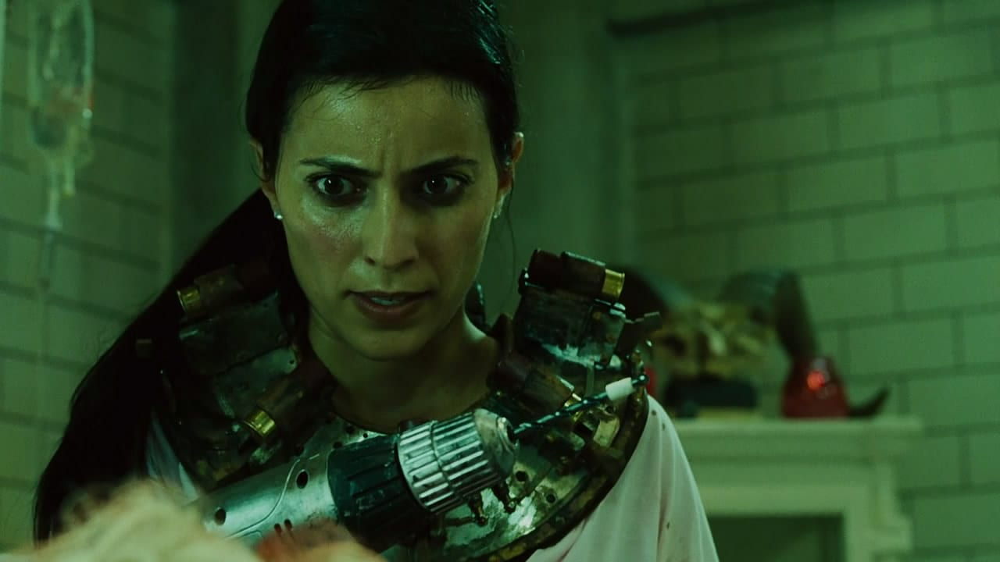
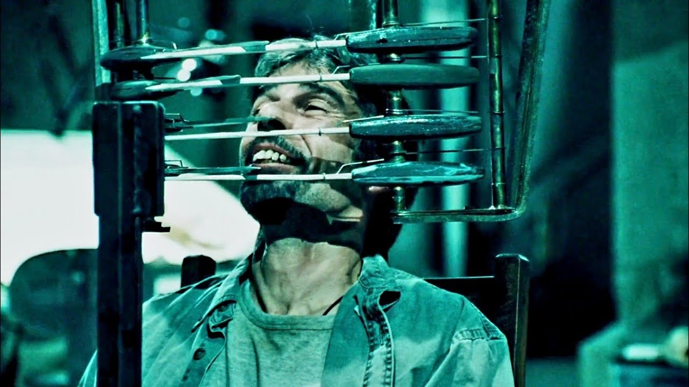
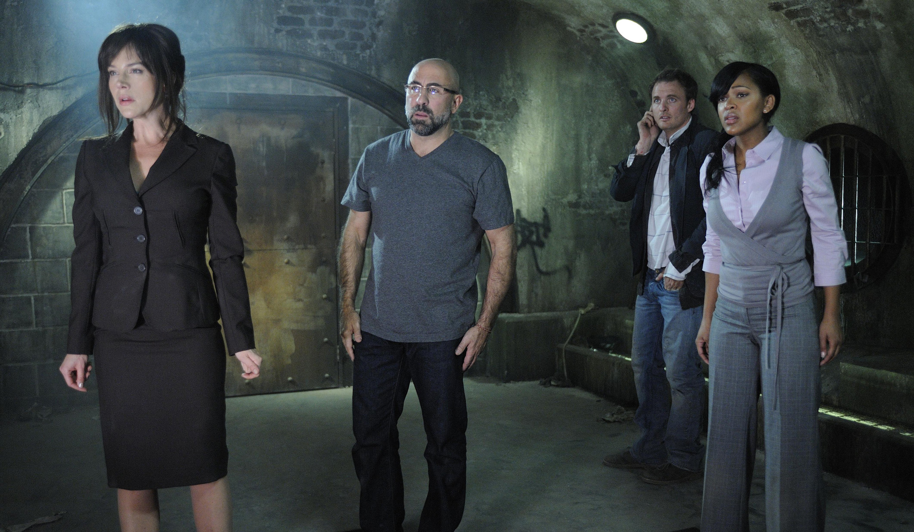
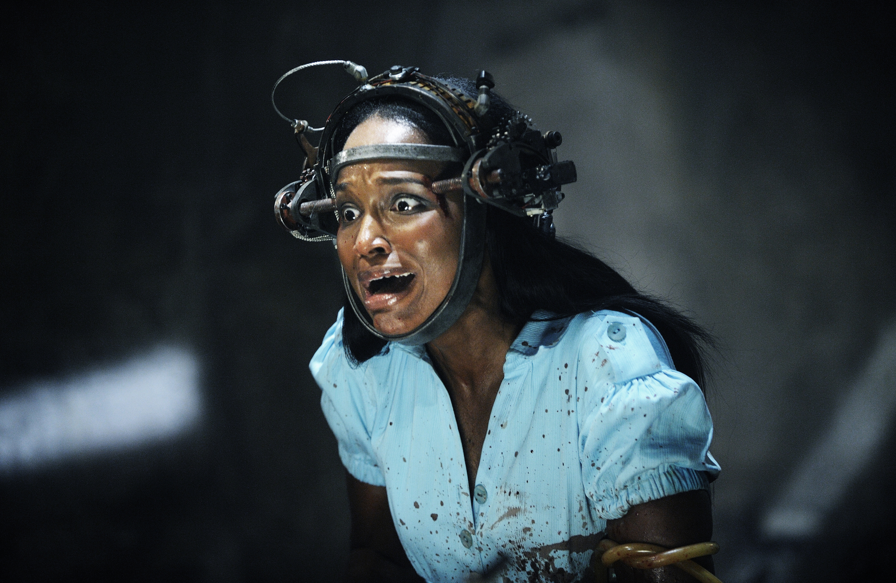
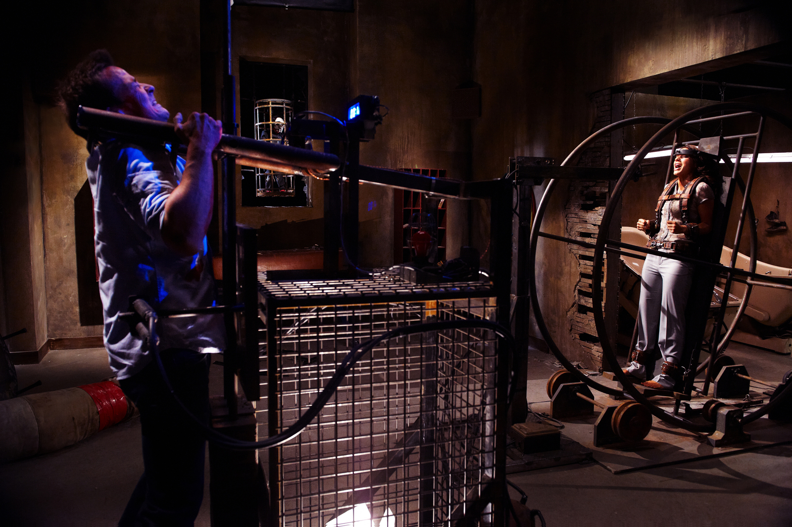
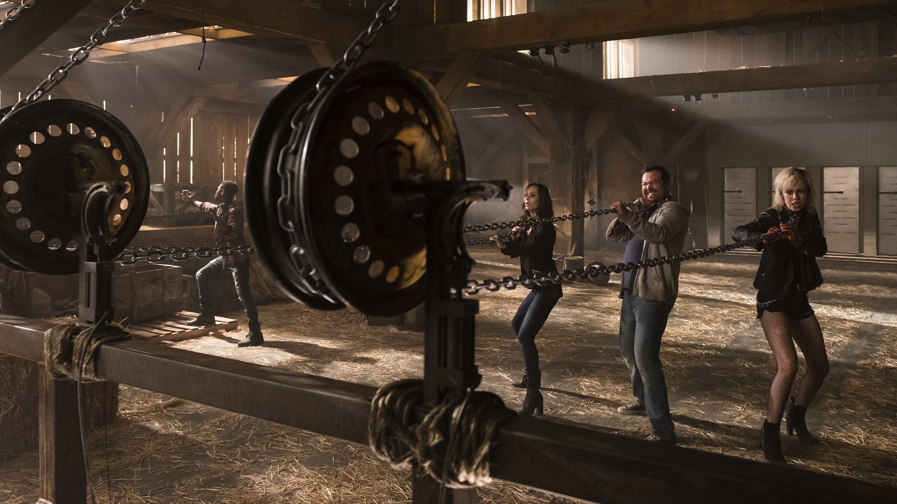
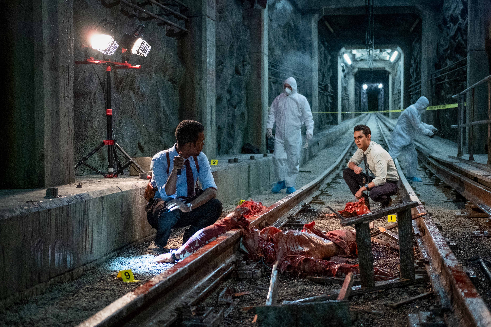
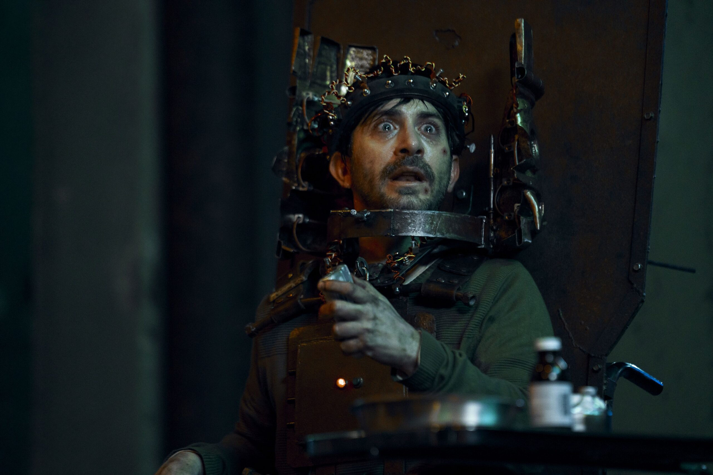

Recopilación de la información más relevante de las diez películas de Saw.
SAW es una saga única del cine de terror que abarca diez películas llenas de giros de guión, trampas ingeniosas y lecciones de vida extremas…
«Vivir o morir, tú decides»
- Jigsaw

Director: James Wan
Duración: 103 min (1h 43min)
Sinopsis: Dos hombres despiertan encadenados en un baño abandonado y descubren que son víctimas de un juego macabro creado por un asesino en serie llamado Jigsaw. Para sobrevivir, deberán resolver sus enigmas y enfrentarse a decisiones extremas antes de que se les acabe el tiempo.
Estrellas en mi opinión: ★★★★★

Director: Darren Lynn Bousman
Duración: 93 min (1h 33min)
Sinopsis: El detective Eric Matthews logra atrapar a Jigsaw, pero descubre que esto forma parte de un plan más grande. Su hijo y otras siete personas están encerrados en una casa repleta de gas tóxico y trampas mortales, obligados a encontrar el antídoto para salir con vida.
Estrellas en mi opinión: ★★★★

Director: Darren Lynn Bousman
Duración: 108 min (1h 48min)
Sinopsis: Con Jigsaw al borde de la muerte, su aprendiz Amanda secuestra a una médica para mantenerlo con vida. Al mismo tiempo, un padre atormentado por el duelo debe superar una serie de desgarradoras pruebas de perdón y venganza.
Estrellas en mi opinión: ★★★★★

Director: Darren Lynn Bousman
Duración: 93 min (1h 33min)
Sinopsis: Tras la muerte de Jigsaw y Amanda, el agente Rigg es arrastrado a un juego mortal de 90 minutos para salvar a dos compañeros. Mientras tanto, los agentes del FBI investigan el misterioso legado del asesino.
Estrellas en mi opinión: ★★★

Director: David Hackl
Duración: 92 min (1h 32min)
Sinopsis: El detective Hoffman se perfila como el único heredero del plan de Jigsaw, pero su secreto está en peligro. Mientras intenta eliminar los cabos sueltos, cinco desconocidos deben colaborar en una serie de pruebas para sobrevivir.
Estrellas en mi opinión: ★★★★

Director: Kevin Greutert
Duración: 89 min (1h 29min)
Sinopsis: El agente Hoffman continúa el legado de Jigsaw. El ejecutivo de una aseguradora médica es sometido a un despiadado juego donde debe decidir quién vive y quién muere entre sus propios empleados.
Estrellas en mi opinión: ★★★★★

Director: Kevin Greutert
Duración: 90 min (1h 30min)
Sinopsis: Un hombre que afirma haber sobrevivido a una trampa de Jigsaw se convierte en una celebridad, pero sus mentiras lo llevan a enfrentarse a un juego real. Las víctimas sobrevivientes buscan ayuda en el doctor Lawrence Gordon.
Estrellas en mi opinión: ★★

Director: The Spierig Brothers
Duración: 92 min (1h 32min)
Sinopsis: Diez años después de la muerte de John Kramer, aparecen cuerpos por la ciudad con las marcas distintivas de Jigsaw. La policía investiga si se trata de un imitador o de alguien dentro del propio departamento.
Estrellas en mi opinión: ★★★★

Director: The Spierig Brothers
Duración: 93 min (1h 33min)
Sinopsis: Un sádico genio de la delincuencia desata una forma retorcida de justicia en un sangriento capítulo de la saga. El detective Ezekiel Banks y su compañero novato se hacen cargo de una investigación sobre espeluznantes asesinatos a policías.
Estrellas en mi opinión: ★★★★

Director: Kevin Greuter
Duración: 118 min (1h 58min)
Sinopsis: Situada entre SAW I y SAW II, un desesperado John Kramer viaja a México para someterse a un tratamiento médico experimental contra el cáncer, solo para descubrir que la operación es una estafa. Con un nuevo propósito, el asesino vuelve a su trabajo cobrándose venganza a través de sus trampas.
Estrellas en mi opinión: ★★★